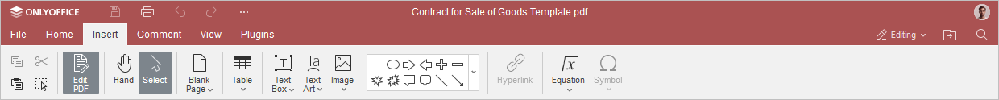
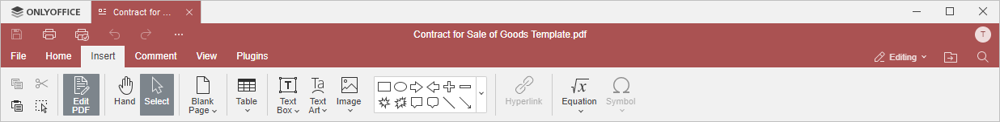

Kartica Umetanje
Kartica Umetanje u PDF Uređivaču omogućava dodavanje elemenata za formatiranje stranice, vizuelnih objekata i komentara.
Odgovarajući prozor u Online PDF Uređivaču:

Odgovarajući prozor u Desktop PDF Uređivaču:

Pomoću ove kartice možete:
- koristiti alat Ruka za pomeranje stranice ili objekata.
- koristiti alat Izbor za izbor vizuelnih elemenata na stranici radi daljeg uređivanja.
- ubaciti praznu stranicu u fajl. Klikom na strelicu na ikoni možete izabrati da li će prazna stranica biti ubačena pre ili posle kursora.
- ubaciti tabelu u fajl.
- ubaciti tekstualni okvir, Tekstualnu umetnost, sliku ili oblike u fajl.
- ubaciti hipervezu u fajl.
- ubaciti jednačinu ili simbol u fajl.